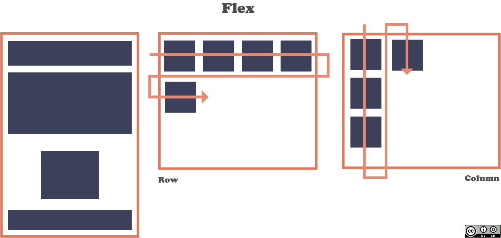
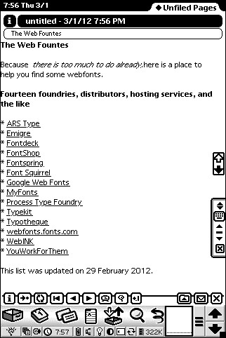
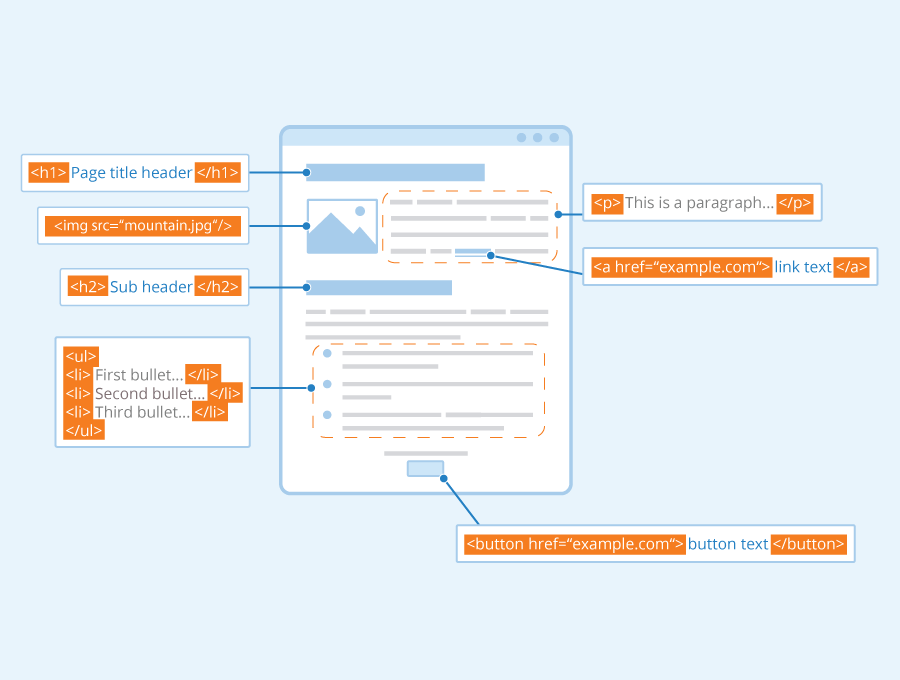

Flex box, listas y enlaces son un conjunto de estructuras de datos que nos permiten organizar los elementos de una página web. Estas estructuras nos permiten crear una página web más dinámica y con mayor facilidad; además, nos permiten crear una página web más estructurada y ordenada. Con el objeto de que el usuario pueda navegar por la página web, el usuario puede hacer clic en los enlaces que encuentre en la página web.
FLEXBOX
El Módulo de Caja Flexible, comúnmente llamado flexbox, fue diseñado como un modelo unidimensional de layout, y como un método que pueda ayudar a distribuir el espacio entre los ítems de una interfaz y mejorar las capacidades de alineación. Este artículo hace un repaso de las principales características de flexbox, las que exploraremos con mayor detalle en el resto de estas guías. Conceptos Básicos de flexbox - CSS | MDN. (2022). Retrieved from https://developer.mozilla.org/es/docsWeb/CSS/CSS_Flexible_Box_Layout/Basic_Concepts_of_Flexbox

LISTAS
El elemento li del ingles item list o elemento de lista declara cada uno de los elementos de una lista. Sus etiquetas son: <li> y </li> (la de cierre es opcional Crea una caja: en bloque. Está definido como: Puede contener: cero o más elementos en bloque o en en linea. li - HTML: Lenguaje de etiquetas de hipertexto | MDN. (2022). Retrieved from https://developer.mozilla.org/es/docs/Web/HTML/Element/li#definici.c3.b3n

ENLACES
El Elemento HTML Anchor <a> crea un enlace a otras páginas de internet, archivos o ubicaciones dentro de la misma página, direcciones de correo, o cualquier otra URL. HTML: Lenguaje de etiquetas de hipertexto | MDN. (2022). Retrieved from https://developer.mozilla.org/es/docs/Web/HTML/Element/a
